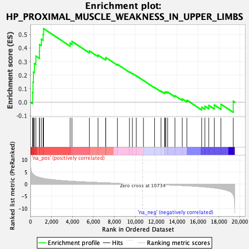
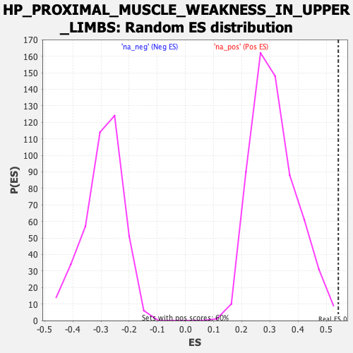

| | | Dataset | PFS |
| Phenotype | NoPhenotypeAvailable |
| Upregulated in class | na_pos |
| GeneSet | HP_PROXIMAL_MUSCLE_WEAKNESS_IN_UPPER_LIMBS |
| Enrichment Score (ES) | 0.54283965 |
| Normalized Enrichment Score (NES) | 1.7260967 |
| Nominal p-value | 0.0016666667 |
| FDR q-value | 0.9721471 |
| FWER p-Value | 1.0 |
Table: GSEA Results Summary

Fig 1: Enrichment plot: HP_PROXIMAL_MUSCLE_WEAKNESS_IN_UPPER_LIMBS
Profile of the Running ES Score & Positions of GeneSet Members on the Rank Ordered List
| SYMBOL | RANK IN GENE LIST | RANK METRIC SCORE | RUNNING ES | CORE ENRICHMENT | | 1 | MORC2 | 207 | 4.336 | 0.0716 | Yes |
| 2 | LIPE | 250 | 4.136 | 0.1478 | Yes |
| 3 | SYNE2 | 290 | 3.974 | 0.2212 | Yes |
| 4 | RAPSN | 380 | 3.648 | 0.2857 | Yes |
| 5 | DOK7 | 525 | 3.265 | 0.3402 | Yes |
| 6 | DYSF | 861 | 2.732 | 0.3749 | Yes |
| 7 | DNM2 | 872 | 2.720 | 0.4259 | Yes |
| 8 | MTMR14 | 1044 | 2.535 | 0.4652 | Yes |
| 9 | FHL1 | 1217 | 2.357 | 0.5010 | Yes |
| 10 | KY | 1260 | 2.319 | 0.5428 | Yes |
| 11 | TCAP | 3798 | 1.204 | 0.4355 | No |
| 12 | TMEM43 | 3970 | 1.155 | 0.4486 | No |
| 13 | SYNE1 | 5632 | 0.789 | 0.3783 | No |
| 14 | MYH7 | 6464 | 0.637 | 0.3478 | No |
| 15 | AGRN | 7194 | 0.517 | 0.3202 | No |
| 16 | CHRND | 7204 | 0.515 | 0.3295 | No |
| 17 | COL13A1 | 8316 | 0.349 | 0.2791 | No |
| 18 | LRP4 | 9462 | 0.182 | 0.2238 | No |
| 19 | SCN4A | 9744 | 0.141 | 0.2121 | No |
| 20 | LMNA | 10110 | 0.089 | 0.1950 | No |
| 21 | RYR1 | 10800 | -0.009 | 0.1598 | No |
| 22 | GMPPB | 11862 | -0.159 | 0.1084 | No |
| 23 | MFN2 | 12475 | -0.257 | 0.0819 | No |
| 24 | ANO5 | 12831 | -0.315 | 0.0696 | No |
| 25 | LDB3 | 12858 | -0.319 | 0.0743 | No |
| 26 | AK9 | 12940 | -0.336 | 0.0765 | No |
| 27 | BIN1 | 13113 | -0.364 | 0.0746 | No |
| 28 | MUSK | 13808 | -0.481 | 0.0481 | No |
| 29 | CHCHD10 | 14507 | -0.609 | 0.0239 | No |
| 30 | CHRNA1 | 14946 | -0.706 | 0.0148 | No |
| 31 | MYF6 | 16360 | -1.087 | -0.0371 | No |
| 32 | FBXO38 | 16668 | -1.202 | -0.0301 | No |
| 33 | POMT1 | 17035 | -1.340 | -0.0235 | No |
| 34 | CHRNB1 | 17566 | -1.587 | -0.0206 | No |
| 35 | EMD | 18199 | -2.003 | -0.0150 | No |
| 36 | CHRNE | 19374 | -4.377 | 0.0077 | No |
Table: GSEA details [plain text format]

Fig 2: HP_PROXIMAL_MUSCLE_WEAKNESS_IN_UPPER_LIMBS: Random ES distribution
Gene set null distribution of ES for HP_PROXIMAL_MUSCLE_WEAKNESS_IN_UPPER_LIMBS